英雄传说：碧之轨迹改·完美攻略·终版（1）
英雄传说：碧之轨迹改·完美攻略·终版
出品：浅闻小鉴攻略组
作者：箫笙·Lip
攻略前言：
本攻略包括全敌人信息收集·全料理收集·全回路收集·全宝箱·全钓鱼·全DP等
本攻略将使用云豹版的英雄传说：碧之轨迹改的游戏
并且使用北美版英雄传说：碧之轨迹B站UP主KloseRinz团队的汉化进行参照以及描述
特别感谢：B站UP主KloseRinz·以及她的团队给与的简体中文汉化支持！
首先进入游戏后从头开始游戏·选择难度后会有提示
读取英雄传说：零之轨迹改通关存档
1·等级继承
罗伊德等级未达到45级：开局同步到45级
罗伊德等级达到45级以上：直接继承罗伊德等级
英雄传说：零之轨迹改·等级上限为50级
2·导力器机壳继承
换过的导力器机壳可继承
3·米拉继承
搜查官阶级为1st·开局可获得20000米拉
搜查官阶级为2nd·开局可获得10000米拉
搜查官阶级为3rd·开局可获得5000米拉
搜查官阶级为4th或更低·开局可获得2000米拉
4·钓公师团等级奖励继承
钓公师团等级为钓圣·每种钓饵初始为30个
5·剧情继承
会继承一部分前作剧情（对话中出现）·以及最终羁绊剧情
6·技能继承
最终羁绊的角色初始的组合技强化
序章
~D之残影~
阿尔泰尔市郊外
本区域新敌人共1个：
剧情怪：幻魔
记得收集情报
战斗后剧情
阿尔泰尔据点·第一层
剧情后自由活动
接着在菜单里的
ORBMENT内·选择罗伊德的QUARTZ内的M-Slot装备上核心回路<力量>
ORBMENT内·选择诺艾尔的QUARTZ内的M-Slot装备上核心回路<盾牌>
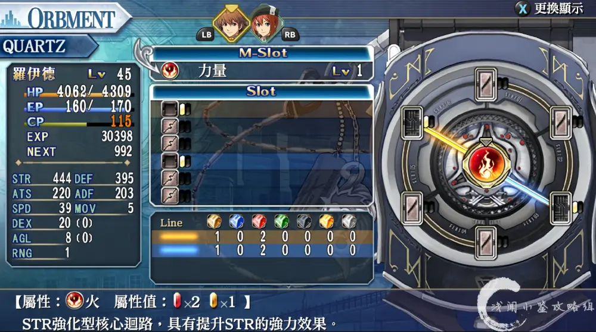
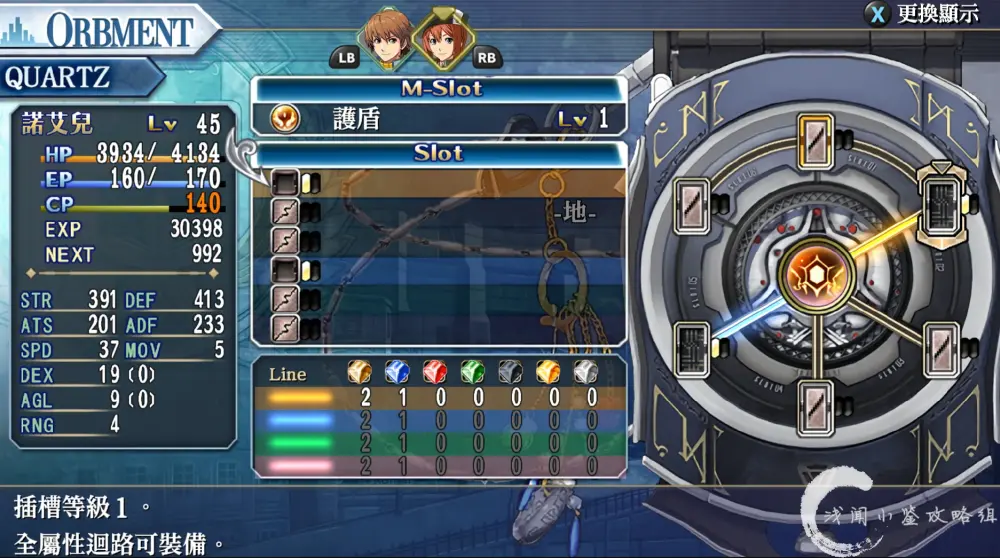
装备后退出菜单·达德利搜查官对话·触发剧情
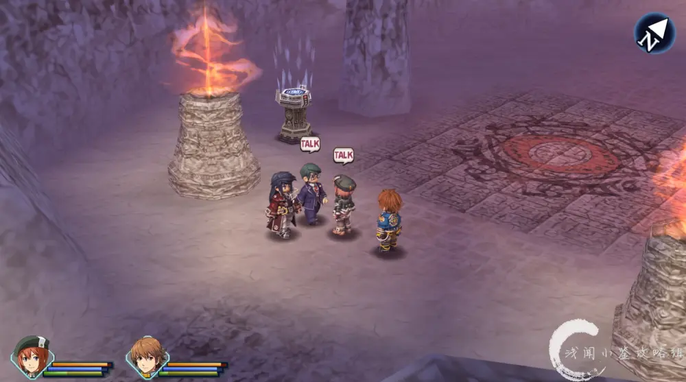
地图：
地图由浅闻小鉴攻略组·Lip成员制作完成
地图以N为准
地图标志说明：
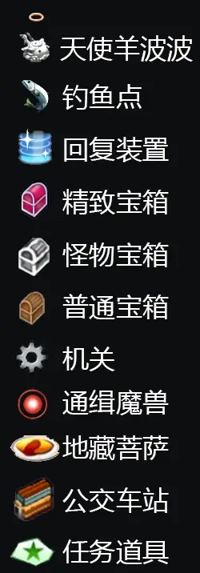
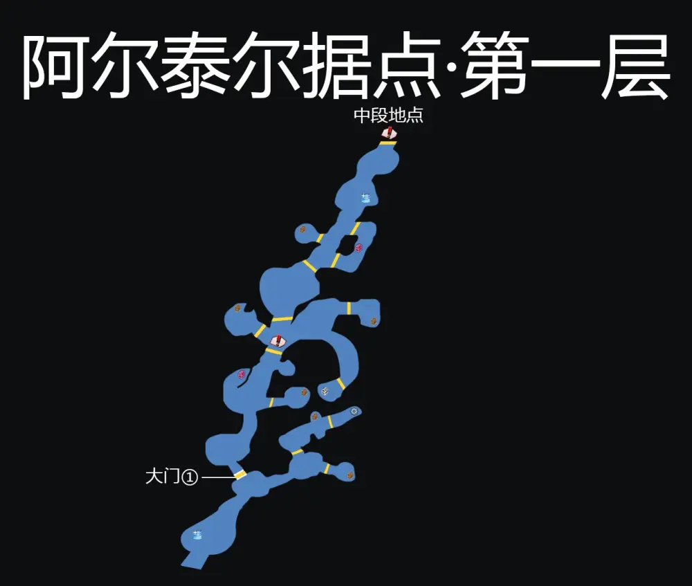
回复装置：2个
机关：1个
宝箱9个：七种耀晶片各30个x2·复苏药·痊愈之药·打火机（饰品）·HP1（回路）
EP填充剂I·箭之鱼·加长枪管（饰品）
本区域新敌人共4个：粉红蘑菇·沙地蜈蚣·暴龙·石化蜥蜴
记得收集情报
关于本区域新敌人：
只要小浅写在攻略上的·都是能在这个区域内打到的·当然可能下个区域更好打
有一些是随怪在战斗中出现的·但是在下个区域可能会以实体出现在地图上
所以什么时候打自行斟酌·之后不会另行叙述
关于场景物品：
本作在场景中会出现一些可以通过攻击打破的岩石或箱子等
打破后概率在地上捡到随机道具
部分地图上有的时候可能会概率出现闪光调查点·调查后概率会有询问
并且进入战斗
战斗胜利后会随机获得回路等道具
根据地图·截图位置·调查大门①·触发剧情
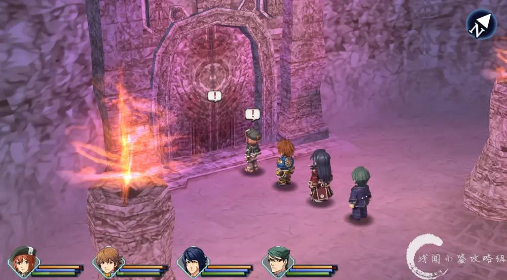
根据地图·截图位置·启动本区域机关
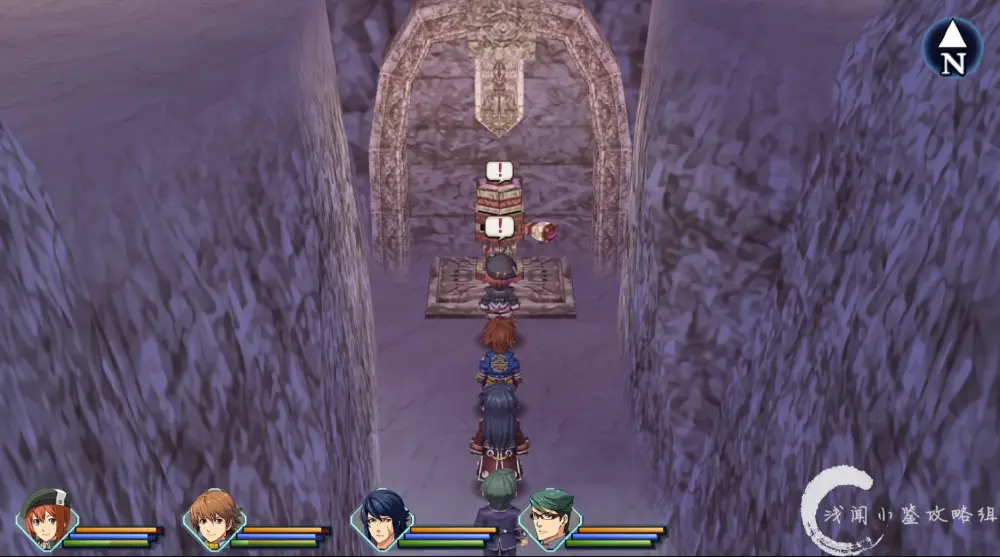
根据地图·截图位置·西走·进入大门①
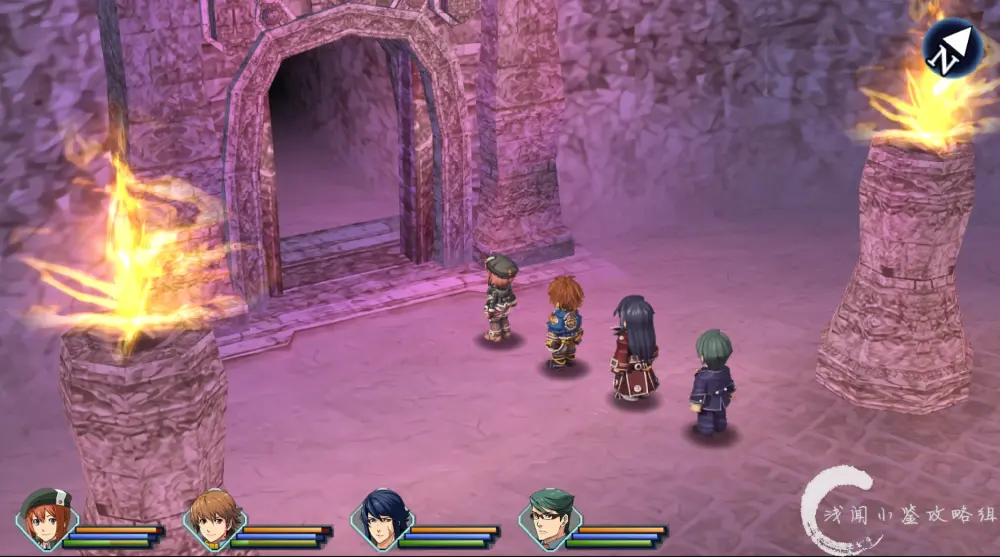
根据地图·截图位置·北走·进入·阿尔泰尔据点旧址·第二层·触发剧情·战斗
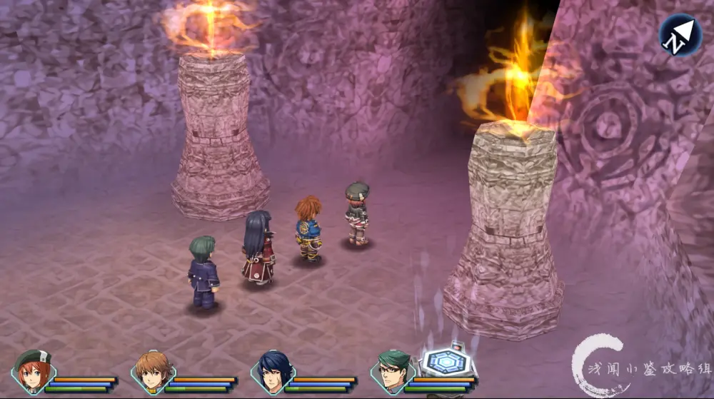
阿尔泰尔据点·第二层
战斗后剧情·走到截图位置·东走·一直走·过图
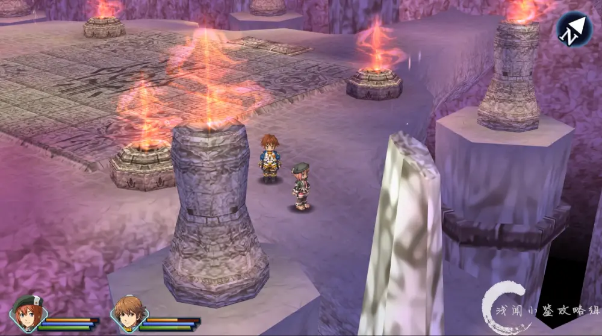
地图：
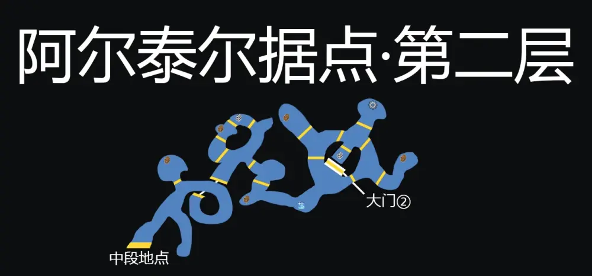
回复装置：1个
机关：1个
宝箱7个：中回复药x2·痊愈之药·省EP1（回路）·复苏药·EP填充剂I·毒之刃（回路）
本区域新敌人共4个：大脑游荡者·恶魔花·矿岩领主
剧情怪：支配者·断罪天使
记得收集情报
根据地图·截图位置·启动本区域机关
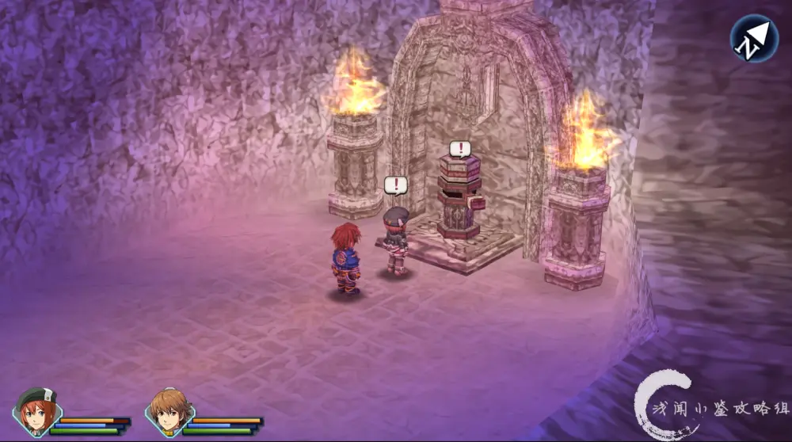
根据地图·截图位置·存档！！！·北走·进入大门②·触发剧情·战斗
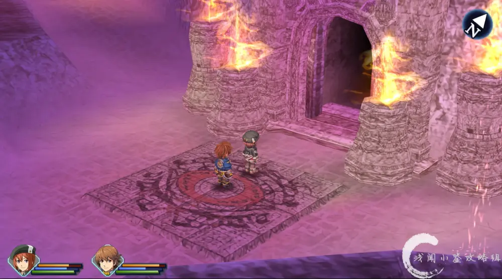
阿尔泰尔据点·祭坛
本区域新敌人共2个：
剧情怪：魔人阿奈斯特·真·魔人阿奈斯特
记得收集情报
主线
探索阿尔泰尔据点旧址
获得DP：6
主线完成
序章结束

随便聊聊：
英雄传说：碧之轨迹改·完美攻略·终版·正式连载
希望各位会喜欢
攻略阅读完全免费
如果大家觉得攻略写的还可以 欢迎大家充电支持我们
您的每一次充电 是对攻略组的支持和鞭策
也是对我们作品的认可 以及继续做下去的动力！
小浅在这里先拜谢各位老爷小姐（鞠躬
另外攻略连载完结后·群内将提供付费攻略的Pdf版下载
欢迎大家进群讨论
欢迎各位催更
Q群：907289369
等待各位来撩